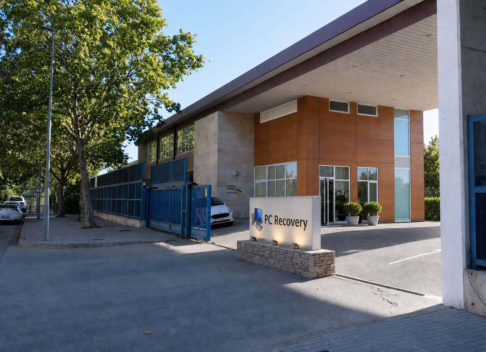
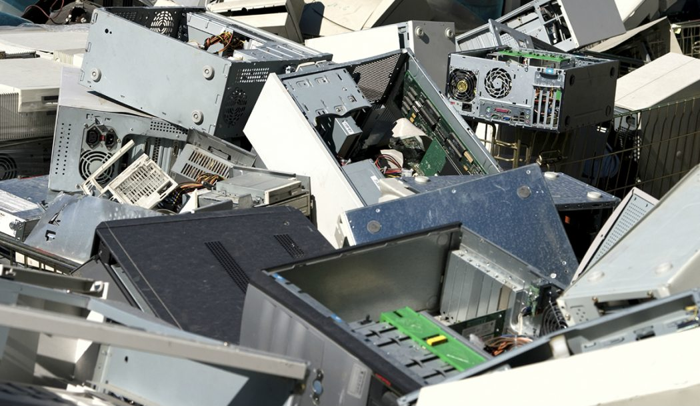

Carrer Arquímedes, 1, 08907 L'Hospitalet de Llobregat, Barcelona

Tens algun ordinador, dispositiu mòbil o altre aparell electrònic que ja no utilitzis? No el llencis! Porta’l a la nostra seu, on li donarem una segona vida o bé el tractarem de manera sostenible i respectuosa amb el medi ambient.
Formulari d'entrega de material
Omple aquest formulari, imprimeix-ho i entrega'l a la nostra seu, juntament amb el(s) objecte(s) que vulguis donar.

Els estius, fem sessions de formació gratuïtes a la nostra seu per conscienciar a la població sobre la importància de gestionar correctament els residus. Podreu unir-vos a nosaltres a les següents dates: